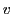
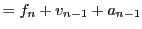

Summer 2009: Slashdotted!
Xmas 2013: I added a Javascript port of my wave simulation.
I want to "lure" my nephews and nieces towards science and engineering, and one of the things I've done towards that goal is to code some real-time physics simulators.
bash$ ./configure bash$ makeI have also made Win32 binaries available (cross-compiled with GCC-MinGW32) for the people that don't know how to compile the code, but would like to use it anyway...
For the specifics of each "demo", check the README inside each source package.
Download
Explosion/fireworks simulator
Download source code, and Win32 binary (compressed with 7-zip).Click and hold-down the left mouse button to create a never ending supply of "debris".
One-dimensional wave simulator
Download source code, and Win32 binary (compressed with 7-zip).Hit SPACE to pull down the string at a distance of 1/4 its full length (from the left). See if you can hit SPACE at the proper frequency (natural structural frequency) to maximize the wave amplitude... Can you make it reach the right side?
Two-dimensional waves simulator - a.k.a. "water"
Waves... (they look much better
when they move :‑)
Click (and hold) the left mouse button to "pull" the water at the point where you click. Draging the mouse makes for nice waves that reflect around the borders of the "pool"...
Snow "generator"
Download the Win32 binary, the code was too embarassing to share :‑)And yes, what you see there getting covered in snow is my... name... in Greek :‑) Hey, my nephews loved it! :‑)
Theory
The "snow" and "fireworks" simulations are easy to implement: we just add random horizontal noise to the falling snow flakes, and we make sure every firework particle is falling with a constant vertical acceleration.The theory behind real-time wave simulation is a little more complex.
Assume we have a wave,
, where  refers to the horizontal screen
axis (i.e. the X-pixel coordinate).
provides the pixel
-coordinate
at frame
; we want to find what the values will change to, at frame
.
refers to the horizontal screen
axis (i.e. the X-pixel coordinate).
provides the pixel
-coordinate
at frame
; we want to find what the values will change to, at frame
.
Consider the individual pixels to represent the water molecules, and assume that each molecule is influenced only by its two neighbours (left and right), as if they are connected to it with springs. That is, assume that a given pixel's value, , is only influenced by the attractive force of its two neighbours, the left pixel, , and the right pixel, .
With the position,  the velocity and the acceleration, the laws governing motion tell us the following (using dt=1):
First: the pixel's position in the new frame is equal to the position in this frame, plus the vertical velocity:
The velocity is equal to the old velocity plus the acceleration:
These equations can be used to perform the simulation, and they would work fine. There is one problem, though: the simulation would be slow, since there's quite a lot of calculations going on per pixel...
Instead, we will use the acceleration at time (instead of ), which basically means that we will approximate the current acceleration rate with the one we would have in two frames' time. We will also set to 1, to further simplify the calculation.
Replacing in 1 leads to the following:
|  | ||
So the end result is amazingly simple: we add the -coordinates of the two neighbouring pixels, and subtract the old value we used to have! Since the springs are losing power with each iteration, we will finally scale the output of the last equation so that it diminishes over time (e.g. multiply by 0.99):
| (2) |
And that is the only equation we need, to simulate one-dimensional waves in real-time.
For the corresponding two-dimensional problem, we just average the effects of the X- and Y- coordinate waves:
So, for real-time simulation of two-dimensional waves, we only need this equation:
| (3) |
Hmm, Coding "semi-scientific" models of natural processes can quickly become addictive... I better stop now... :‑)


| Index CV | Updated: Sat Oct 8 12:33:59 2022 |
The comments on this website require the use of JavaScript. Perhaps your browser isn't JavaScript capable or the script is not being run for another reason. If you're interested in reading the comments or leaving a comment behind please try again with a different browser or from a different connection.